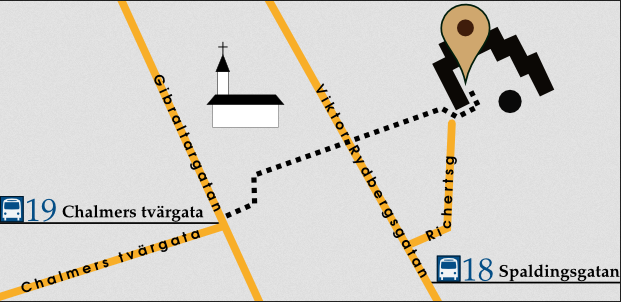

ContentsPractical infoRules Participants Side Events Live coverage FAQ |
See alsoOld School MtG blogRotary Pub home page Scryings Winc0n |

I mean, we had most everything ready. Shane Semmens, The Beef, and Olof Robertsson had already payed. Even had a new playmat going on. And then, global disaster. But it's not like a playset Phyrexian Gremlins in our Diabolic Machines is going to stop us from conning n00bs forever (or whatever it was n00bcon used to be about). No, this one we'll wait out. Stupid Gremlins have to untap eventually, and then we'll strike. We can hang out here in the meantime. Ain't gonna let Shane pay a tournament fee without getting a tournament. Might be a while though.

What: The 12th annual n00bcon, aka the oldest recurring oldschool Magic tournament in the world. It was planned for April 2020, but some stuff happened and traveling and gathering became a bad idea. This may well end up as something like the 15th or 23rd n00bcon when all is said and done, but in our hearts it will always be n00bcon 12.
When: Eventually. We'll never forget.
Where: Rotary Pub at Richertsgatan 2, Gothenburg, Sweden.

You can check out some more info about the site at the Rotary Pub home page
Participation: The participants got invited in pre-pandemic 2020, and can be found in the Participants section. If you have any questions about invites, feel free to post an e-mail to the the webmaster.
Prizes: The winner get a Giant Shark (The Dark). Top8 gets some sort of trophies. Some secret prices in Easter Eggs will be handed out as well. Of course everyone gets a rad convention pin with an Eastery Jester's Cap.

|
|
|
The main tournament will NOT be played for Ante; hence any cards that use the Ante mechanic are banned from being played.

Chaos Orb (2)
Artifact
1, Tap: Choose a nontoken permanent on the battlefield. If Chaos Orb is on the battlefield, flip Chaos Orb onto the battlefield from a height of at least one foot. If Chaos Orb turns over completely at least once during the flip, and touches the chosen permanent, destroy that permanent. Then destroy Chaos Orb.
Falling Star (2R)
Sorcery
Choose any number of non-overlapping creatures on the battlefield. Flip Falling Star from a height of at least one foot. If Falling Star turns over completely at least once during the flip, it deals 3 damage to each chosen creature it touches. Any creatures damaged by Falling Star that are not destroyed become tapped.

|
|
|

PRE-PANDEMIC PLAN, MAY BE REVISED
Wednesday: ALICE SHOWDOWN hosted by David Chambers. Thursday: SIAB-URBORG-FEAST hosted by Stockholm in a Bottle and Legion Urborg. Saturday: Wizards' Tournament 3, hosted by shrouded mages. Other likely sideevents include the Ante40K Championship, and some cosy Brothers' Highlander games.
We aim for commentary provided by Frisbee Golf master Kenneth Mossberg and Thoughtlace collector Mats "Ottifant" Karlsson. The event will be streamed by Wak-Wak Mtg.

WORK IN PROGRESS!
Post-pandemic sometime. Maybe 2024 or so? We'll keep this page updated.
We plan to make a Scryings mat; a tribute of sorts to the old Khalsa-Brain Mirage mats. I presume that it will be sweet.
Nah, that was mostly a n00bcoM 1 thing. Draconian Swedish reprint policy it is.